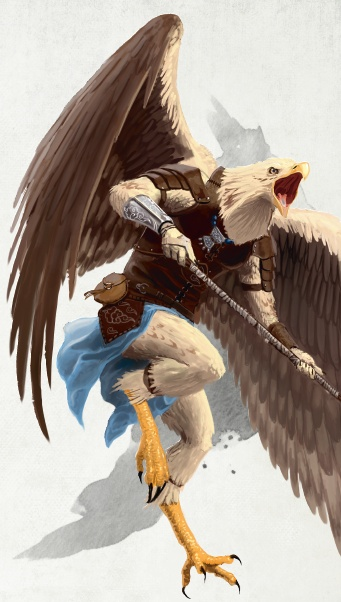

Aarakocra
Race officielle issue de l'Elemental Player's Companion.
Piégés dans les hautes montagnes au sommet de grands arbres, les aarakocras, parfois appelés oiseliens, évoquent la crainte et l'émerveillement. Beaucoup d'aarakocras ne sont même pas originaires du plan matériel. Ils viennent d'un monde qui se situe au-delà, depuis les panoramas infinis du plan élémentaire de l'Air. Ce sont des immigrants, des réfugiés, des éclaireurs et des explorateurs, leurs avant-postes fonctionnant comme des points d'ancrage dans un monde à la fois étrange et exotique.
Bec et plume
Vus du sol, les aarakocras ressemblent beaucoup à de grands oiseaux. C'est seulement quand ils descendent pour se percher sur une branche ou pour marcher sur le sol que leur apparence humanoïde se révèle. Lorsqu'ils se tiennent debout, les aarakocras peuvent atteindre 1,50 mètre de haut. Ils possèdent de longues jambes étroites qui se finissant en serres acérées et des plumes couvrent leurs corps. Leur plumage désigne généralement l'appartenance à une tribu. Celui des mâles est de couleurs vives, avec des plumes rouges, orange ou jaunes. Celui des femelles est de couleurs plus sobres, généralement brun ou gris. Leur tête complète l'apparence aviaire, se rapprochant du perroquet ou de l'aigle avec des variations tribales distinctes.
Gardiens du ciel
Nulle part l'aarakocra n'est plus à l'aise que dans le ciel. Ils peuvent passer des heures dans les airs, et certains y restent des jours, verrouillant leurs ailes et laissant les courants chauds les maintenir en l'air. Dans la bataille, ils se révèlent être des forces aériennes dynamiques et acrobatiques, se déplaçant à une vitesse remarquable et avec grâce, plongeant pour se déchaîner sur leurs adversaires avec des armes ou leurs serres, avant de se retourner et de s'envoler.
Une fois en vol, un aarakocra abandonne le ciel avec réticence. Sur leur plan d'origine, ils peuvent voler pendant des jours ou des mois, n'atterrissant que pour pondre leurs œufs et nourrir leurs petits avant de se lancer à nouveau dans le firmament. Ceux qui s'installent dans le plan matériel trouvent l'endroit étrange. Ils oublient parfois ou ignorent les distances verticales, et ils n'ont rien d'autre que de la pitié pour ces gens terre à terre forcés de vivre et de travailler dur sur le sol.
Traits particuliers aviaires
La ressemblance des aarakocras avec les oiseaux n'est pas limitée aux caractéristiques physiques. Les aarakocras ont un grand nombre de similitudes avec les oiseaux ordinaires. Ils sont pointilleux sur leur plumage, tendant souvent leurs plumes, nettoyant et grattant les passagers minuscules qu'ils pourraient avoir ramassés. Quand ils daignent descendre du ciel, ils le font souvent près de points d'eau où ils peuvent attraper des poissons et se baigner. Beaucoup d'aarakocras ponctuent leur discours de gazouillis, des sons qu'ils utilisent pour véhiculer l'accent et les sens cachés, un peu comme un être humain le pourrait à travers des expressions faciales et des gestes. Un aarakocra pourrait être frustré avec des gens qui ne parviennent pas à saisir les nuances ; les menaces d'un aarakocra pourraient être prises comme une plaisanterie et vice versa.
L'idée de propriété déconcerte la plupart des aarakocras. Après tout, qui possède le ciel ? Même lorsqu'on leur explique, ils trouvent d'abord la notion de propriété mystifiante. En conséquence, un aarakocra qui a peu affaire avec les autres peuples pourrait être une nuisance, tombant du ciel pour arracher du bétail ou piller des récoltes de fruits et de grains. Les objets étincelants et brillants capturent leurs regards. Ils trouvent qu'il est difficile de ne pas récupérer le trésor et de le ramener à leur colonie pour l'embellir. Un aarakocra qui passe des années parmi les autres races peut apprendre à inhiber ces pulsions. Le confinement terrifie l'aarakocra. Etre mis à terre, pris au piège dans un espace souterrain, ou emprisonnés par le froid du sol est un tourment inflexible auquel seuls quelques aarakocras peuvent résister. Même quand ils sont perchés sur une branche haute ou au repos dans leur maison au sommet d'une montagne, ils apparaissent en alerte, le regard vigilant et prêts à prendre la fuite.
Patrie
La plupart des aarakocras vivent sur le plan élémentaire de l'Air. Ils entrent parfois sur le plan matériel, à la poursuite d'ennemis ou pour contrecarrer les desseins de ceux-ci. Un accident pourrait également envoyer un nid d'aarakocras sur ce plan. Quelques-uns trouvent leur chemin vers un tel monde à travers des portails à partir de leur propre plan et établissent des nids sur une haute montagne ou dans la canopée d'une vieille forêt. Une fois que des tribus d'aarakocras se sont installées dans une zone, elles se partagent un territoire de chasse qui couvre une zone de 150 kilomètres de cotés, chaque tribu chassant sur les terres les plus proches de sa colonie, et n'allant plus loin que si le gibier se fait rare. Une colonie typique se compose d'un grand nid en vignes tissés à toit ouvert. Le plus ancien a le rôle du chef, avec le soutien d'un chaman.
Grand dessein
LES AARAKOCRAS DANS LES ROYAUMES OUBLIÉS
Jamais bien établis dans Faerûn, les aarakocras y possèdent seulement quatre grandes colonies : dans les Monts étoilés au sein de la Haute-forêt, sur les Cornes de la Tempête en Cormyr, dans les Montagnes fendues sur le Bief de Vilhon et dans les Falaises brumeuses à Chult.
La colonie établie dans les Monts étoilés, la plus proche de la vallée de Dessarin, a toujours été secrète et défendue, les aarakocras étant seulement repérables lors de leurs vols au dessus la Haute-forêt. Un dragon vert cruel et avide a presque éradiqué la population et a dispersé les survivants. Ces aarakocras et leurs descendants ont juré vengeance contre le dragon et peuvent être vu à écumer les terres du Nord et du Cormyr pour trouver des signes de leur ennemi.
La seule colonie restante se trouve sur les pentes des Monts étoilés méridionaux. À la source de la Licorne, le Dernier Aérien est le foyer de plusieurs dizaines d'aarakocras. Récemment, les anciens ont détecté des changements dans les vents dominants, ce qu'ils considèrent comme un mauvais présage.
Contrairement aux aarakocras d'autres mondes sur le plan matériel, les aarakocras des Royaumes Oubliés voyagent rarement dans le plan élémentaire de l'Air.
Les aarakocras aiment jouir de la paix et de la solitude. La plupart d'entre eux ont peu d'intérêt à traiter avec d'autres peuples et encore moins d'intérêt à passer du temps sur le sol. Pour cette raison, il faut des circonstances exceptionnelles pour qu'un aarakocra quitte sa tribu et décide d'entreprendre la vie d'aventurier. Ni les trésors, ni la gloire, ne sont suffisants pour les éloigner de leurs tribus; une menace grave pour leur peuple, une mission de vengeance, ou la menace d'une catastrophe est typiquement au cœur du choix de la voie d'aventurier pour un aarakocra.
Deux autres circonstances pourraient pousser un aarakocra vers l'aventure. Tout d'abord, les aarakocras ont des liens historiques avec les Ducs des Vents d'Aquaa. Les individus exceptionnels honorent ce lien et pourraient partir à la recherche des pièces manquantes du Bâton en Sept Morceaux, les restes d'un artéfact façonnés par les Ducs de Vent il y a des temps immémoriaux pour vaincre le champion monstrueux de la Reine du Chaos, Miska l'Araignée-Loup. Lorsque qu'il fut plongé dans le corps de Miska, le Chaos dans son sang brisa le bâton et dispersa ses morceaux à travers le multivers. Récupérer les morceaux signifie gagner l'honneur et l'estime des Vaati qui l'ont forgé et pourrait permettre de restaurer une arme puissante pour la défense contre les agents du mal élémentaire.
Deuxièmement, les aarakocras sont les ennemis jurés des élémentaires de terre, en particulier les gargouilles qui servent Ogrémoch, le Prince de la Terre. Le mot aarakocra pour gargouille est vaguement traduit comme "caillou volant" et les batailles entre aarakocras et gargouilles ont fait rage à travers les plans élémentaires de la Terre et de l'Air, débordant même parfois sur le plan matériel. Les aarakocras sur ce plan pourraient quitter leurs colonies afin de prêter mains fortes à d'autres humanoïdes luttant contre les cultes de la terre et contrecarrant leurs objectifs.
Noms d'aarakocras
Comme dans beaucoup de leurs discours, les noms aarakocras incluent des clics, des trilles et des sifflets, au point que les autres peuples passent un moment difficile à essayer de les prononcer. Typiquement, un nom a de deux à quatre syllabes et les sons agissent comme connecteurs. En interagissant avec les autres races, les aarakocras peuvent utiliser des surnoms utilisés par de gens qu'ils ont rencontré ou des formes abrégées de leurs noms et prénoms.
Les aarakocras des deux sexes peuvent avoir un de ces noms courts : Aera, Aial, Aur, Deekek, Errk, Heehk, Ikki, Kleeck, Oorr, Ouss, Quaf, Quierk, Salleek, Urreek, ou Zeed.
Traits
HISTORIQUES D'AARAKOCRAS
Les historique les plus appropriés pour les aarakocras sont le sauvageon, l'ermite et le sage.
Les petites colonies d'aarakocras sont insulaires et distantes les unes des autres, et seuls quelques aarakocras vivent loin de leurs perchoirs. Dans les Monts étoilés de la Haute-forêt, dans les Royaumes Oubliés, pas plus de quelques dizaines d'aarakocras vivent loin des nids de leurs familles. Ceux qui le font sont généralement des rôdeurs ou des guerriers, patrouillant constamment pour repérer les menaces extérieures.
En tant qu'aarakocra, vous avez certains traits en commun avec votre peuple. Être capable de voler à grande vitesse à partir du niveau 1 est exceptionnellement efficace dans certaines circonstances, et extrêmement dangereux dans d'autres. En conséquence, jouer un aarakocra nécessite une attention particulière de votre MD.
Augmentation de caractéristiques. Votre Dextérité augmente de 2, et votre Sagesse augmente de 1.
Âge. Les aarakocras atteignent leur maturité à 3 ans. Comparé aux humains, un aarakocra ne vit pas plus de 30 ans.
Alignement. La plupart des aarakocras sont bons et ne choisissent que rarement entre la loi et le chaos. Les chefs et les combattants penchent du coté loyal, alors que les explorateurs et les aventuriers sont plutôt chaotiques.
Taille. Les aarakocras font environ 1,50 mètre de haut. Ils sont minces et dotés d'un corps léger qui pèse entre 40 et 50 kg. Votre taille est Moyenne.
Vitesse. Votre vitesse de base est de 7,50 mètres.
Vol. Vous avez une vitesse de vol de 15 mètres par round. Pour utiliser cette vitesse, vous ne devez par porter d'armure moyenne ou lourde.
Serre. Vous maîtrisez vos armes naturelles, lesquelles infligent 1d4 de dégâts tranchants.
Langues. Vous pouvez parler, lire et écrire le commun, l'aarakocra et l'aérien.
Traduit par Garruth